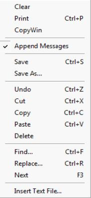

Log windows may be switched on using the logmode command. The
logmode command gives the ability to specify the name of the log window and directs the messages to the window with the specified name. If no name is specified the messages are directed to a window with the name of the program. If a program is executed more than once and a log window has already been created, with no name specified for the log, the log window will be cleared and all subsequent messages will be sent to the existing log window. If you wish to preserve a log, you may either select to append message, save the log to a text file, or freeze it, which creates a text file object. All of these actions can be accessed by the popup menu that appears when right-clicking on a message log window.
The log windows appear as tabbed windows and can be rearranged by the user. The logmode command has an option to have the log window floating next to the program window.
The Message settings dialog in the Programs section of the
General Options dialog specifies whether EViews runs programs in Verbose mode (the default), lists commands in the status line as they are executed, or uses Quiet mode, which suppresses this information. EViews will run faster in quiet mode since the status line display does not need to be updated.
See also the logmode,
logmsg,
logclose, and
logsave commands, which all have additional options to specify the name of the log.